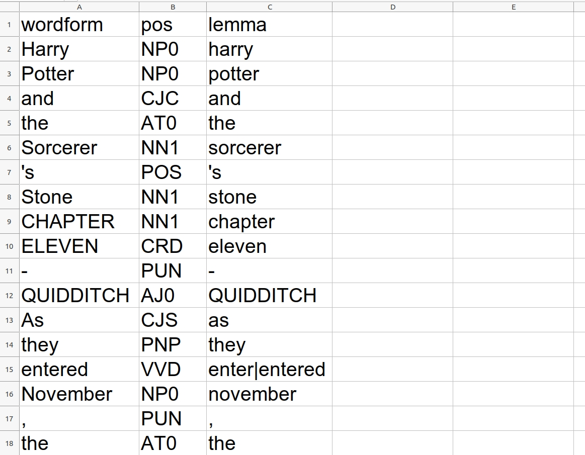

# Textauszeichnung <br/> <hr/> <br/>Prof. Dr. Christof Schöch <br/> <br/> <hr/> <p><strong>Modul Auszeichnungssprachen<br/>MSc. Digital Humanities, Universität Trier</strong></p> <hr/> <img height="60" data-src="img/basics/uni-trier.png"> :: - Ziele dieser Sitzung: - Grundlagen von CSS vermitteln -- ## Überblick 1. [Markup oder Tabelle?](#/2) 1. [Grundlagen von XML](#/3) 1. [XML und das OHCO-Modell von Text](#/4) 1. [Textkodierung in der Praxis: Editoren](#/5) -- ## (1) Markup oder Tabelle? --- #### Beispiel: plain text <br/> >Harry Potter and the Sorcerer's Stone<br/>CHAPTER ELEVEN - QUIDDITCH<br/>As they entered November, the weather turned very cold. The mountains around the school became icy gray and the lake like chilled steel.<br/>"Library books are not to be taken outside the school," said Snape. --- ### Beispiel: tabellarisch (Annotation)  --- ### Beispiel: Markup (Metadaten, Struktur) --- ### Beispiel: Tabelle (Annotation + Struktur) --- ### Beispiel: Markup (Struktur + Annotation) -- ## (2) Grundlagen von XML --- ### Eine Definition von Markup >We define markup, or (synonymously) encoding, as any means of making explicit an interpretation of a text. [...] Encoding a text for computer processing is, in principle, like transcribing a manuscript from *scriptio continua*; it is a process of making explicit what is conjectural or implicit, a process of directing the user as to how the content of the text should be (or has been) interpreted. >By markup language we mean a set of markup conventions used together for encoding texts. A markup language must specify how markup is to be distinguished from text, what markup is allowed, what markup is required, and what the markup means. XML provides the means for doing the first three; documentation such as these Guidelines is required for the last. <small>(Quelle: "[A Gentle Introduction to XML](https://tei-c.org/release/doc/tei-p5-doc/en/html/SG.html)", in: Guidelines of the TEI)</small> --- ### Was ist XML? * eXtensible Markup Language (eXtensible Meta-Language?) * Metasprache / Metasyntax zur Definition von XML-Formaten * Standard für digitale Repräsentation von Daten * Prinzipien + Syntax (aber kein Vokabular) * einfach (wenige, allgemeine, mächtige Mechanismen) * anwendungs- und plattformunabhängig * W3C-Standard --- ### XML-basierte Sprachen * Grundprinzipien <!-- .element: class="fragment" data-fragment-index="1" --> * jede XML-basierte ML respektiert die Syntax von XML * jede XML-basierte ML definiert ein eigenes Vokabular * Das Vokabular umfasst die Menge der spezifischen Elementtypen und Attribute; * Das Vokabular kann auch zusätzliche syntaktische Regeln bestimmen * die XML-basierte ML eignet sich für (einen oder mehrere) bestimmte Dokumenttypen * die XML-basierte ML ist in einem Schema oder einer DTD definiert * Beispiele für XML-basierte ML <!-- .element: class="fragment" data-fragment-index="2" --> * TEI, MEI, CEI * MathML * MusicML * XHTML * SVG * uvm. --- ### Bestandteile von XML:<br/>Elemente, Attribute, Werte, Strings --- ### Weitere Bestandteile * Processing instructions (im Prolog) * Entities (Platzhalter im Text, oder weil Teil des Markups) * Leere Elemente * Kommentare --- ### Wohlgeformtheit und Validität * „well-formed“ (wohlgeformt) <!-- .element: class="fragment" data-fragment-index="1" --> * Dokument entspricht den allgemeinen Prinzipien von XML * die Kriterien sind immer gleich * die Kriterien sind allgemein * „valid“ (valide) <!-- .element: class="fragment" data-fragment-index="2" --> * Dokument entspricht der Syntax und dem Lexikon eines spezifischen XML-Formats * Kriterien hängen von der jeweiligen Definition (DTD, Schema) ab * Kriterien sind meist sehr detailliert --- ### "Wohlgeformtheit" im Detail * Prolog: XML-Version, Zeichensatz * Nur ein Element auf oberster Ebene * Jedes Element hat Anfangs- und Endtag * Hierarchische Struktur: keine überlappenden Elemente * Elemente können Unterelemente haben * Elemente können Attribute haben * Attribute können Werte haben * Die Werte sind in Anführungszeichen gesetzt * Alle Zeichen entsprechen dem ang. Zeichensatz --- ### "Validität" im Detail * Dokument ist wohlgeformt (siehe oben) * Definition (Schema/DTD) vorhanden: intern/extern * Dokument entspricht der Definition * Alle notwenigen, nur erlaubte Elemente * Alle notwendigen, nur erlaubte Attribute * Alle Werte haben eine gültige Form/Ausprägung * Elemente und Attribute kommen nur dort vor, wo sie auch erlaubt sind -- ## (3) XML und das OHCO-Modell von Text --- ### Vorbemerkung: Vorteile deskriptiven Markups * For creation / composition <!-- .element: class="fragment" data-fragment-index="1" --> * "Composition is simplified" * "Structure-oriented editing is supported" * "More natural editing tools are supported" * Alternative document views are facilitated" * For publishing <!-- .element: class="fragment" data-fragment-index="2" --> * Formatting can be generically specified and modified * Apparatus can be automated * Output device support is enhanced * Portability and interoperability are maximized * For archiving, retrieval, and analysis <!-- .element: class="fragment" data-fragment-index="3" --> * Information retrieval is supported * Analytical procedures are supported --- ### Die Baumstruktur von XML --- ### In XML kodiert ``` <person> <name> <vorname>Alan</vorname> <nachname>Turing</nachname> </name> <beruf>Informatiker</beruf> <beruf>Mathematiker</beruf> <beruf>Kryptograph</beruf> </person> ``` --- ### Baumstruktur abstrakt --- ### Bestandteile eines Dokuments --- ### Konzeptuelles Modell: Was ist Text? >The model [of text] in question postulates that <span style="background-color:yellow">text consists of objects of a certain sort, structured in a certain way</span>. The nature of the objects is best suggested by example and contrast. They are chapters, sections, paragraphs, titles, extracts, equations, examples, acts, scenes, stage directions, stanzas, (verse) lines, and so on. But they are not things like pages, columns, (typographical) lines, font shifts, vertical spacing, horizontal spacing, and so on. <span style="background-color:yellow">The objects indicated by descriptive markup have an intrinsic direct connection with the intellectual content of the text</span>; they are the underlying "logical" objects, components that get their identity directly from their role in carrying out and organizing communicative intention. <span style="background-color:yellow">The structural arrangement of these "content objects" seems to be hierarchical</span> – they nest in one another without overlap. [...].<br/> On this account then text is an "Ordered Hierarchy of Content Objects" (OHCO), and descriptive markup works as well as it does because it identifies that hierarchy and makes it explicit and available for systematic processing.<br/>(Alan Renear, "Text Encoding", 2006) --- ### Herausforderung: Überlappende Hierarchien --- ### Lösungsansätze * Zerlegen und Verbinden * Leeres Element mit Verweis <img height="100" data-src="img/E04/overlap3.jpg"> -- ## (4) Praxis der Textkodierung: Editoren --- ### Der Klassiker: oXygen ($$$) <br/><small>Siehe auch: <a href="https://ride.i-d-e.de/issues/issue-11/ediarum/">Ediarum mit oXygen</a></small> --- ### Der Flexible: Atom (mit Plugins) <br/><small>Siehe: <a href="https://dragonfly.hypotheses.org/1127">Can Atom Replace oXygen?</a></small> --- ### Der Freie: JEdit (mit Plugins) <br/><small>Siehe: <a href="https://www.dariah.eu/2020/07/27/dariah-theme-2018-2019-standard-sustainability-improving-the-usability-of-the-text-encoding-initiative-tei/">TEI Plugin von DARIAH</a></small> -- ## Abschluss --- #### Lektürehinweise Referenzlektüre * Georg Vogeler und Patrick Sahle: „XML“, in: Digital Humanities: Eine Einführung, hg. von Fotis Jannidis, Hubertus Kohle und Malte Rehbein. Stuttgart: Metzler, 2017, 128-146. Weitere Empfehlungen * Vonhoegen, Helmut. Handbuch: Einstieg in XML. Grundlagen, Praxis, Referenz. Bonn, 2015. * "A Gentle Introduction to XML", in: *P5: Guidelines for Electronic Text Encoding and Interchange*. TEI Consortium, 2020. https://tei-c.org/release/doc/tei-p5-doc/en/html/SG.html * Renear, Allen H.: „Text Encoding“. In: *Companion to Digital Humanities*, ed. Susan Schreibman et al. Oxford: Blackwell, 2006. --- ## Danke! <br/><br/> <br/><br/> <br/><br/> <hr/> <small> <br/>Lizenz: <a href="https://creativecommons.org/licenses/by/4.0/">Creative Commons Attribution (CC BY)</a>, 2020. </small> <hr/>